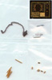
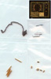
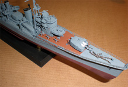

{kind=link}
{kind=link}
{kind=link}

{kind=link}
You may click on these small images to view larger pictures

Hasegawa 1/350 IJN Destroyer Kagero
Kit #40072
MSRP $138.85 $88.85 from Great Models Webstore
Images and text Copyright © 2010 by Matt Swan
Developmental Background
In 1937 when the design was first approved and in 1939 when the keels were first laid down the Kagero Class-A Destroyers were considered to be the heaviest and most perfect fleet destroyer in existence. By mid 1941 eighteen ships of this class were complete and as was customary with IJN ship classes the first bore the name of the class. One additional destroyer was completed before the end of the war bringing the total to nineteen ships.
These ships all saw heavy action during the war and all but one were lost. The Kagero Class Destroyer was originally equipped with six five inch guns and eight 24 inch torpedoes however the type lacked effective radar and anti aircraft defenses. In 1944 the original Kagero underwent refit where one set of two five inch guns were removed and the anti-aircraft defenses were upgraded from only 4 25mm machine guns to 28 machine guns. By wars end only the Yukikaze remained which was turned over to the Chinese Navy and renamed Tan Yang. This ship was finally scrapped in 1971 thus ending the story of the Kagero Class-A Destroyer series.
The Kit
Other than a Cutty Sark that I had built nearly thirty years ago I have not built a ship, never a modern war ship such as this. Yes, I was a ship virgin. And as such I really had no idea what to expect when this arrived on my doorstep. I knew that it was one of those floaty things and that completed it would be about eleven inches long. How tough could that be? When I opened this box I was greeted by more itsy bitsy plastic pieces than any aircraft I had ever attempted before then I got to the photo etched frets and just about spotted my drawers. There is an amazing amount of stuff crammed into this small box. What have I gotten myself into?
This is a full hull model kit and for you guys that are ship virgins like I was that means you get everything above and below the waterline. There is no option in this box for a waterline build which is convenient should you be constructing a diorama. The hull includes a series of stiffeners which seem not entirely necessary for this small a ship but hey, I’m a ship virgin – what do I know? Maybe they are needed, certainly would be in a larger model. The deck is provided in three sections with an optional aft section for early or late versions of the Destroyer. The deck plates include many molded close holes that need to be opened should you be building the late version. We get plenty of sprues of detail parts with lots of guns, both large and small. This boxing also includes brass barrels for the five inch guns which are a fairly easy upgrade. There is so much detail involved with this kit that I could ramble on for quite some time, instead let’s just list some of the most notable items.
* Aft deck options for early or late versions.
* Mast options for both early and late versions.
* Optional bridge structures, early or late.
* Three five inch gun emplacements for early version.
* Lots of small anti-aircraft guns for late version.
* Optional clear parts for Bridge.
* Bronze plated props and stand parts.
* Two options on type of display stand.
* Complete photo etched railings and accessories.
* Two part instruction booklet for early and late versions.
* Extensive high quality decal sheet.
* Machined brass barrels for five inch guns.
* Machined individual metal depth charges.
* Cast white metal depth charges.
* Metal anchor chains (slightly over scale)
* Comprehensive painting instructions.
* Detailed rigging instructions.
I think you can begin to get the idea that you’re really getting your moneys’ worth from this kit. On the down side of things each and every part seems to have a fine mold separation seam so there is some extensive fine clean-up work required. Normally around this point I would be telling you how many parts are in the box but really, it would take an hour just to try to count this stuff. I’ll leave it at “Bunches and bunches of parts”. Let’s take a look at the sprue shots to help illustrate this point.
You may click on these small images to view larger pictures

Construction
Where to start, if this were an aircraft I most likely would go straight for the cockpit. After a careful study of the instructions and settling on building the late model version of the destroyer I decided to assemble the hull and stand first. I want to paint the deck before fixing it in place but for the moment will let it sit in place. A few low profile pieces are attached to the deck and the late model gun mount holes are all drilled out. Various sub-assemblies are completed like the main bridge, five inch guns and boiler stacks then mounted on toothpicks for painting and detailing. I went to White Ensign Models for my paints and had a short wait before they were delivered but this time was consumed placing various PE tidbits and cleaning up mold separation seams on small parts. Let me tell you, having a good Omni-Visor is key for dealing with this stuff. I need at least ten power magnification to see what I’m doing here. We now have the basic hull together and the stand pieces simply pressed together to support things.
Once I started working with the PE on the bridge time simply faded away. I had replaced the kit clear parts with photo etched window frames, attached all the little stand-off mounts and assorted bridge detail parts then realized over three hours had passed in the blink of an eye. As each sub-assembly was completed and before being mounted on a toothpick it was test fit to the main deck. Once my paint arrived things were ready to take a major leap forward. Deck areas were painted with linoleum, masked off then hit with gray.
Once all the major sub-assemblies had been complete, painted and detailed I could start fixing them to the deck. From here it becomes an adventure in working with Photo Etch. Attaching ladders and braces was no big deal but putting these PE railings in place was another matter all together. Let me digress just for a moment here and point out that the kit includes PE railing for both the early and late version so the modeler needs to pay attention to which pieces are being removed from the fret.
I started small working with a section of bow railing and a short piece of the main deck railing. I found that if I put glue on the first three or four attachment points, held the railing in place and hit it with accelerator I could then come back one attachment point at a time and apply glue with the sharpened end of a toothpick and slowly complete each railing section. And so things went for about two weeks until all the railings were in place. I took short breaks from attaching railing and built up torpedo racks so once all the railings were in place I could move directly to the next detailing step. One note here, I airbrushed all my PE railing and later detail parts right on the fret then just touched up contact points with a paint brush later on.
You may click on these small images to view larger pictures

Not long after I started attaching sub-assemblies to the deck a potential construction problem started to float around in the dark recesses of my brain. At some point I was going to have to deal with rigging this ship and I had no idea what I could use for a scale effect. Normally when doing aircraft I work with invisible thread colored with a magic marker but here I would have to have as many as five strands coming together at once and connecting to a hair fine pieces of photo etch. And there lay the solution – hair fine. My wife is Cherokee Indian and has gorgeous long black hair so I went looking for her hair brush. It was perfect --- straight, thin, black strands with no frizz or frays like found on thread and strong. A test with superglue proved a good solid bond with no chemical reaction and five strands together were still thin enough to not cause a problem on the rigging points. All rigging was completed with Cherokee Hair.
Final details included a basic acrylic sludge was on the deck and structures after a sealing coat of Future. Rust staining was done with Rust-All and a fine round brush. The Cherokee Hair rigging won points with the wife and now the completed model is displayed on my 150 gallon fresh water fish tank.
Conclusions
This was an excellent break from building aircraft. I had always shied away from building ship kits because they always looked so complicated and I had little idea where to even start with one. This one, albeit a small ship kit, was nearly perfect as a first time ship adventure. The kit provided everything necessary to build a very well detailed kit except for the rigging lines. Complete parts and instructions are included for both early and late versions as well as a couple intermediate versions. Everything fit like it was supposed to, directions were clear and to the point, decals were nicely done although only a few are needed for the build you get plenty for just about any permutation you wish to explore. The most difficult aspect of this build (for me) was cleaning the mold separation seam from all the little tiny parts. I give the kit a very good recommendation and I for one will be building more ships.


{kind=link}
{kind=link}
{kind=link}
{kind=link}
{kind=link}
{kind=link}
{kind=link}
{kind=link}
{kind=link}
{kind=link}
{kind=link}
{kind=link}
{kind=link}
{kind=link}
{kind=link}
{kind=link}
{kind=link}
{kind=link}
{kind=link}
{kind=link}
{kind=link}
{kind=link}
{kind=link}
{kind=link}